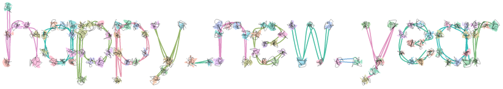

vignettes/Gridfont.Rmd
Gridfont.RmdThe {gridfont} package can convert a string of text into point coordinates for a single-stroke line font representation of the text. Note that the space character doesn’t seem to have any strokes so for simplicity I replaced it with a _.
library(minixcali)
library(gridfont)
let <- create_text_df('merry_christmas')
llet <- split(let, let$char_idx)The structure consists of multiple nodes for each letter.
str(llet, list.len = 4)## List of 15
## $ 1 :'data.frame': 12 obs. of 10 variables:
## ..$ char_idx: int [1:12] 1 1 1 1 1 1 1 1 1 1 ...
## ..$ char : chr [1:12] "m" "m" "m" "m" ...
## ..$ stroke : num [1:12] 1 1 2 2 2 2 2 3 3 3 ...
## ..$ x : num [1:12] 0 0 0 1 2 3 3 3 4 5 ...
## .. [list output truncated]
## $ 2 :'data.frame': 10 obs. of 10 variables:
## ..$ char_idx: int [1:10] 2 2 2 2 2 2 2 2 2 2
## ..$ char : chr [1:10] "e" "e" "e" "e" ...
## ..$ stroke : num [1:10] 1 1 1 1 1 1 1 1 1 1
## ..$ x : num [1:10] 8 9 10 9 8 7 7 8 9 10
## .. [list output truncated]
## $ 3 :'data.frame': 5 obs. of 10 variables:
## ..$ char_idx: int [1:5] 3 3 3 3 3
## ..$ char : chr [1:5] "r" "r" "r" "r" ...
## ..$ stroke : num [1:5] 1 1 2 2 2
## ..$ x : num [1:5] 11 11 11 12 13
## .. [list output truncated]
## $ 4 :'data.frame': 5 obs. of 10 variables:
## ..$ char_idx: int [1:5] 4 4 4 4 4
## ..$ char : chr [1:5] "r" "r" "r" "r" ...
## ..$ stroke : num [1:5] 1 1 2 2 2
## ..$ x : num [1:5] 14 14 14 15 16
## .. [list output truncated]
## [list output truncated]We now proceed to build the Excalidraw scene one subpath at a time. We first add the polylines for each letter, then garnish them with points at the nodes.
d <- Excali_doc()
scale <- 25
offset_x <- 100
offset_y <- 400
for (l in llet) {
col <- sample(size = 1,
hcl(seq(0, 360), c = 50, l = 70))
xy <- cbind(scale * l$x, scale * (10 - l$y))
xy[, 1] <- xy[, 1] - min(xy[, 1])
xy[, 2] <- xy[, 2] - min(xy[, 2])
stroke <- xkd_draw(
x = scale * max(l$xoffset) - offset_x,
y = scale * min(10 - l$y) - offset_y,
width = diff(scale * range(l$x)),
height = diff(scale * range(l$y)),
strokeWidth = 1L,
roughness = 2L,
strokeColor = col,
strokeSharpness = "round",
backgroundColor = "#40c057",
fillStyle = "hachure",
points = xy
)
d$add(stroke)
for (ii in seq(1, nrow(xy))) {
r <- runif(1, 5, 15)
point <- xkd_ellipse(
x = scale * max(l$xoffset[ii]) + xy[ii, 1] -
0.5 * r - offset_x,
y = scale * min(10 - l$y) + xy[ii, 2] -
0.5 * r - offset_y,
width = r,
height = r,
roughness = 2L,
strokeSharpness = "sharp",
fillStyle = "solid",
strokeWidth = 0.5,
backgroundColor = sample(size = 1,
hcl(seq(0, 360)))
)
d$add(point)
}
}
d$export('gridfont.json')You can see this drawing at: https://excalidraw.com/#json=6287294034083840,0qR2T40GRb_m-NHIkYMzSw
